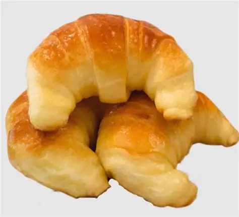

Panificados
Medialunas, criollos, facturas, panes y especialidades recién horneadas todos los días.
Ver másPanadería • Cafetería • Restaurante
Elaboramos diariamente panificados artesanales, facturas, medialunas, tortas y especialidades para acompañar cada momento del día.
También ofrecemos desayunos, meriendas, almuerzos y cenas para disfrutar en nuestros locales.

Elaboramos cada día productos frescos y artesanales para acompañarte en cualquier momento.
Medialunas, criollos, facturas, panes y especialidades recién horneadas todos los días.
Ver más
Café, capuchino, submarino, licuados e infusiones para disfrutar en un ambiente cálido.
Ver más
Pizzas, hamburguesas, sándwiches y platos elaborados para compartir en familia.
Ver más
CrisCar nació en 1990 con el sueño de ofrecer productos artesanales elaborados con dedicación y la calidez de una atención familiar.
Hoy, con más de 35 años de trayectoria y presencia en Río Segundo y Pilar, seguimos acompañando a nuestros clientes en desayunos, meriendas, almuerzos y cenas, manteniendo la calidad que nos caracteriza desde nuestros comienzos.
Conocé másHace más de 35 años trabajamos con el compromiso de brindar productos frescos, atención cálida y un espacio para disfrutar en familia.
Panificados, facturas y tortas elaborados diariamente con ingredientes de calidad.
Un lugar pensado para compartir desayunos, meriendas, almuerzos y cenas.
Nos gusta recibir a cada cliente con la calidez que nos caracteriza desde nuestros comienzos.
Décadas acompañando a las familias de Río Segundo y Pilar con la misma pasión.
Te esperamos en cualquiera de nuestras sucursales para disfrutar de nuestros productos artesanales y un ambiente cálido.
Corrientes y Deán Funes
Lunes a Domingo 9:00 a 01:00 hs
Cómo llegarRuta 9 y Bv Argentino
Lunes a Sábado 9:00 a 13:00 hs 17:00 a 20:00 hs
Cómo llegarViví la experiencia CrisCar con productos frescos, atención cálida y un espacio pensado para compartir.
Reservá tu mesa